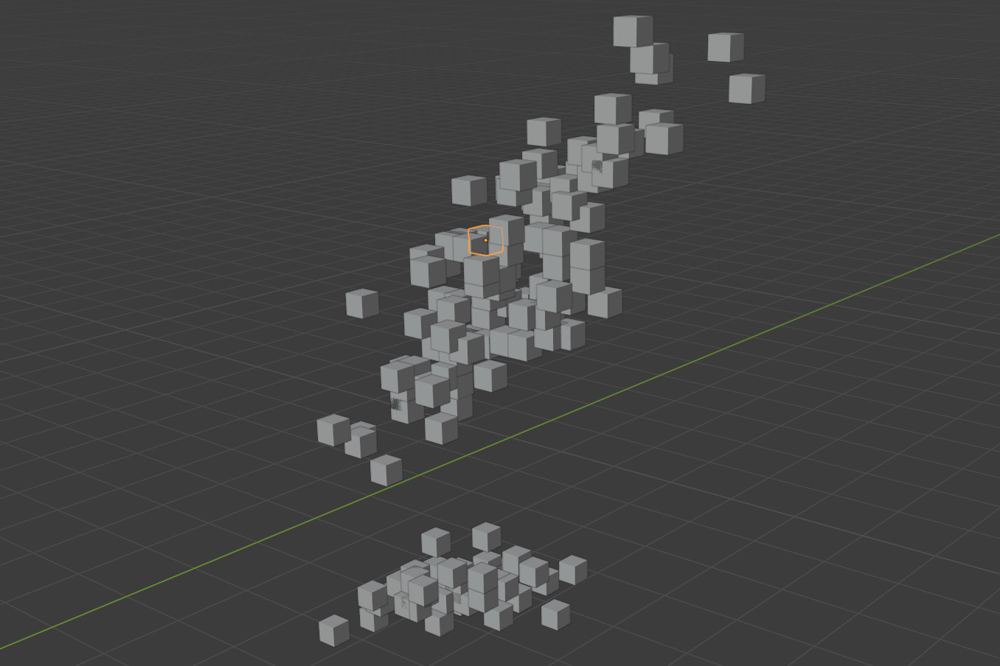
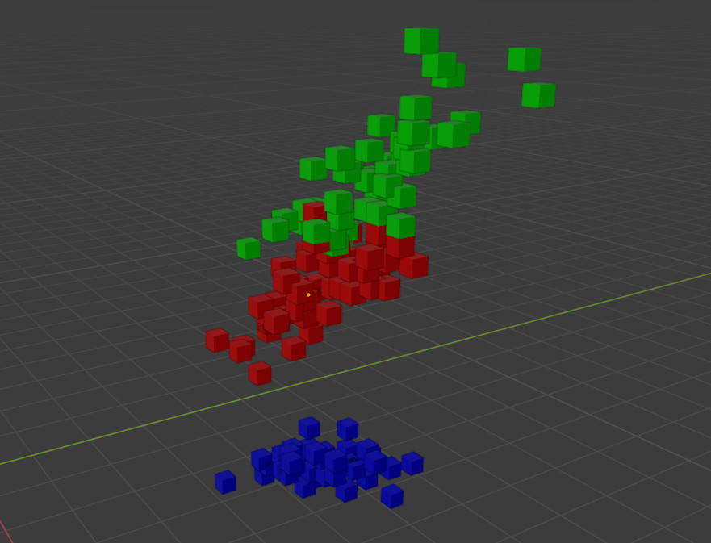

intro-to-mvdf.RmdThe history of 3D graphics in R is almost as long as the history of R itself, spanning from lattice graphics (which gained 3D visualizations sometime around 2001-2002) to rgl (whose oldest source on CRAN dates back to 2004) to newer implementations such as anglr, ggrgl, and rayshader/rayrender. Each of these fantastic packages can be used to produce beautiful 3D visualizations from data, with the processing and rendering happening right inside your R session.
mvdf is a little bit different. Rather than visualize your data itself, mvdf outsources the work, helping you use R as a frontend for the Blender 3D rendering engine, translating data between analysis and visualization steps. As the rayshader documentation says, learning about programming, data science, and data visualization is hard enough: we don’t need to add Blender to the list. mvdf aims to help you build all sorts of visualizations from almost any input data with the same set of generic tools, without needing to get into the weeds of 3D rendering technology.
While mvdf is a relatively low-level package designed for developers (and check out the mvdf for Developers vignette for more information on that), this guide walks through the basic steps of getting from data to visualization, with pointers to documentation on how to make more complex renders. Note that all of our examples from here on out expect that you’ve already installed Blender (version 2.80 or up) and mvdf (via remotes::install.github("mikemahoney218/mvdf")).
mvdf Anyway?A mvdf is a minimum viable data format for 3D rendering – that is, it’s a data frame that contains at least the bare minimum amount of information required to produce a render. For the simplest renders, that generally means having x, y, and z coordinates, as well as a unique identifier, for each object to be drawn. We’ll call any object that contains at least that mvdf an “mvdf object” from here on out, and we can create one using mvdf_obj:
library(mvdf)
library(dplyr) # For demonstration purposes only -- not required by mvdf!
iris %>%
mvdf_obj(
x = "Sepal.Length",
y = "Sepal.Width",
z = "Petal.Length") %>%
head()
#> x y z idx
#> 1 5.1 3.5 1.4 1
#> 2 4.9 3.0 1.4 2
#> 3 4.7 3.2 1.3 3
#> 4 4.6 3.1 1.5 4
#> 5 5.0 3.6 1.4 5
#> 6 5.4 3.9 1.7 6As you can see, our mvdf_obj only contains that minimal set of data needed to make a 3D visualization (plus an index column that’s been calculated for us). If we don’t want to lose the other fields in our data frame, we can include any tabular data we want in the special metadata field of mvdf_obj:
iris_mvdf <- iris %>%
mvdf_obj(
x = "Sepal.Length",
y = "Sepal.Width",
z = "Petal.Length",
metadata = iris)
head(iris_mvdf)
#> x y z idx
#> 1 5.1 3.5 1.4 1
#> 2 4.9 3.0 1.4 2
#> 3 4.7 3.2 1.3 3
#> 4 4.6 3.1 1.5 4
#> 5 5.0 3.6 1.4 5
#> 6 5.4 3.9 1.7 6
#> Sepal.Length Sepal.Width Petal.Length Petal.Width Species idx
#> 1 5.1 3.5 1.4 0.2 setosa 1
#> 2 4.9 3.0 1.4 0.2 setosa 2
#> 3 4.7 3.2 1.3 0.2 setosa 3
#> 4 4.6 3.1 1.5 0.2 setosa 4
#> 5 5.0 3.6 1.4 0.2 setosa 5
#> 6 5.4 3.9 1.7 0.4 setosa 6We can also store non-tabular data in the appendix slot of mvdf_obj, letting us preserve all our data in a single object. By working with the “getter” and “setter” methods provided by the package, we can manipulate these fields just like we would any other data frame:
iris_mvdf %>%
mvdf() %>% # Retrieve the mvdf from iris_mvdf
merge(
metadata(iris_mvdf), # Getter methods also exist for metadata and appendix
by = "idx"
) %>%
mutate(x = ifelse(Species == "setosa", 0, x)) %>%
set_mvdf(iris_mvdf) %>% # Setters set_metadata and set_appendix also exist
head()
#> x y z idx
#> 1 0.0 3.5 1.4 1
#> 2 0.0 3.1 1.5 10
#> 3 5.7 2.8 4.1 100
#> 4 6.3 3.3 6.0 101
#> 5 5.8 2.7 5.1 102
#> 6 7.1 3.0 5.9 103
#> Sepal.Length Sepal.Width Petal.Length Petal.Width Species idx
#> 1 5.1 3.5 1.4 0.2 setosa 1
#> 2 4.9 3.0 1.4 0.2 setosa 2
#> 3 4.7 3.2 1.3 0.2 setosa 3
#> 4 4.6 3.1 1.5 0.2 setosa 4
#> 5 5.0 3.6 1.4 0.2 setosa 5
#> 6 5.4 3.9 1.7 0.4 setosa 6So why use mvdf objects? The simple answer is that mvdf objects are designed to be a “contract” defining how different rendering methods should interact with your data. For instance, if we run ?mvdf_obj we can see that x, y, and z are all defined as follows:
Numeric: distance of the origin of the object from the origin of the grid system
(the central point at 0, 0, 0) in meters in the given direction. Must have no
`NA`, `NULL`, `NaN`, `Inf`, or `-Inf` values. [...] Coordinates are assumed to
be on a right-handed coordinate system with Z oriented as the natural
"vertical" direction.All mvdf objects that have these fields (which, in this case, is all of them) agree to this same definition. When possible, definitions are checked automatically when creating an mvdf:
try(mvdf_obj(x = 1, y = 1, z = NA))
#> Error in validObject(.Object) :
#> invalid class "mvdf_obj" object: @z must not have any missing values.And when updating mvdf values:
temp_mvdf <- iris_mvdf %>%
mvdf() %>%
mutate(x = NA)
# This is the same as set_mvdf(temp_mvdf, iris_mvdf)
try(mvdf(iris_mvdf) <- temp_mvdf)
#> Error in mvdf_obj(data = structure(list(x = c(NA, NA, NA, NA, NA, NA, :
#> Couldn't determine x values.Not all definitions can be automatically checked (for instance, there’s no real way to tell if your data is oriented correctly or stored in meters). In those cases, mvdf objects (and rendering methods) expect the inputs to be correct without any validation.
The advantage of this contract is that we can then make renders super easily. mvdf provides functions to let you interactively build Python scripts which can then be executed in Blender to produce renders.
The absolute simplest rendering pipeline looks something like this:
render_script <-
# Delete placeholder objects and import standard Python modules
create_blender_frontmatter() %>%
# Add cubes at each point in space in our mvdf
add_mesh_primitive(object = iris_mvdf,
primitive = "cube",
size = 0.2) %>%
# Save the output to save_render.blend
add_blender_endmatter(filepath = "save_render.blend")That pipeline produces a Python script that we could then run inside Blender to produce our render. If we don’t want to boot up Blender, we can also execute the script in the background (which is a good bit more stable for larger renders) using the execute_render function:
execute_render(render_script)This produces an output Blender file (named save_render.blend) that we can open in Blender to see something like this:

This is neat, but pretty basic. Luckily, mvdf is built to be a modular system, with more complicated data and rendering methods using almost exactly the same tools as the most basic renders.
For instance, to color our cubes by species, we need to apply what Blender calls a “material” to each of our objects. To do that, we can create an mvdf_simple_material object instead of an mvdf_obj and pass a color column to diffuse_color:
iris_material <- iris %>%
mutate(diffuse_color = case_when(
Species == "setosa" ~ "blue",
Species == "versicolor" ~ "red",
TRUE ~ "green"
)) %>%
mvdf_simple_material(
x = Sepal.Length,
y = Sepal.Width,
z = Petal.Length,
# We can also leave this blank to use the "diffuse_color" column by default
diffuse_color = diffuse_color,
# Transform colors to an RGBA array
translate_colors = TRUE)
iris_material %>%
head()
#> diffuse_color metallic roughness x y z idx
#> 1 0,0,1,1 0 0 5.1 3.5 1.4 1
#> 2 0,0,1,1 0 0 4.9 3.0 1.4 2
#> 3 0,0,1,1 0 0 4.7 3.2 1.3 3
#> 4 0,0,1,1 0 0 4.6 3.1 1.5 4
#> 5 0,0,1,1 0 0 5.0 3.6 1.4 5
#> 6 0,0,1,1 0 0 5.4 3.9 1.7 6You’ll notice that mvdf_simple_material did a few things for us automatically:
metallic and roughness columns in our mvdf, even though we didn’t specify anything to do with those fields! Because materials in Blender have metallic and roughness properties no matter what, mvdf_simple_material makes it explicit what default level any missing values will be set to.translate_colors to TRUE.Now that we have an mvdf_simple_material object, we can use exactly the same code as above to construct our rendering script. Other than changing the object we provide add_mesh_primitive, this code is exactly the same as above – our functions are able to infer what we want from the class of our provided object alone.
render_script <- create_blender_frontmatter() %>%
add_mesh_primitive(object = iris_material, # Replace iris_mvdf here
primitive = "cube",
size = 0.2) %>%
add_blender_endmatter(filepath = "save_render.blend")We execute it the exact same way:
execute_render(render_script)And our output looks the same, but now is colored by species!

By creating a specific class from our data, we provide our functions with all the information they need to operate. If we decide that we don’t want to use those fancy colors, we can just cast our data back into mvdf_obj format:
set_values(iris_material, newclass = "mvdf_obj") %>%
head()
#> x y z idx
#> 1 5.1 3.5 1.4 1
#> 2 4.9 3.0 1.4 2
#> 3 4.7 3.2 1.3 3
#> 4 4.6 3.1 1.5 4
#> 5 5.0 3.6 1.4 5
#> 6 5.4 3.9 1.7 6And those are the basic features included in mvdf! If you’re looking to extend these features to create more involved renders, check out the mvdf for Developers vignette, and happy rendering!